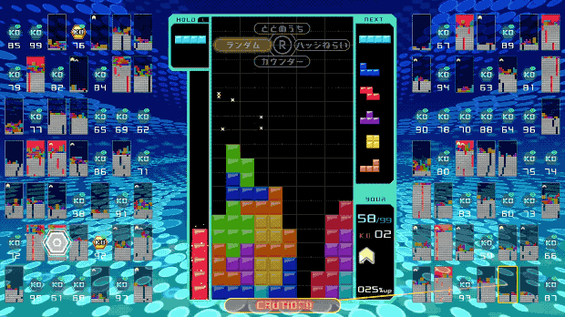

As with the traditional Tetris formula, players rotate and drop shaped bricks known as tetrominoes onto a board. Players can clear tetrominoes by completing rows across both sides, whereas players will lose if tetrominoes overflow off the top of the board.
As with normal Tetris rules, players have the option to store a tetromino piece to swap out at any time. By clearing multiple lines or performing continuous line clears in a row, players can send "garbage" to other players, which will appear on their board unless they can quickly clear lines in response. More garbage can be sent by completing combination moves in succession of making a "tetris" (matching 4 lines at once) or performing a "T-spin" (squeezing the T-shaped tetromino into a position it would otherwise not fall into by rapidly rotating it).[1]
During gameplay, small grids representing the other 98 players are displayed at the sides of the main board. Players can either choose to target individual players, or have the computer automatically target other players based on one of four criteria: random players, those who are targeting the player, those who are close to being defeated, and those who possess badges. Badges are earned by knocking out a player with garbage (or gray lines), which earns them a piece of a badge, along with any other badges or pieces that player had. The more badges a player completes and possesses, the more lines they can send to other players at a time (up to a 100% boost). At the end of a game, players will earn experience that will increase their level.
Play a game of classic Tetris for yourself at https://tetris.com/play-tetris